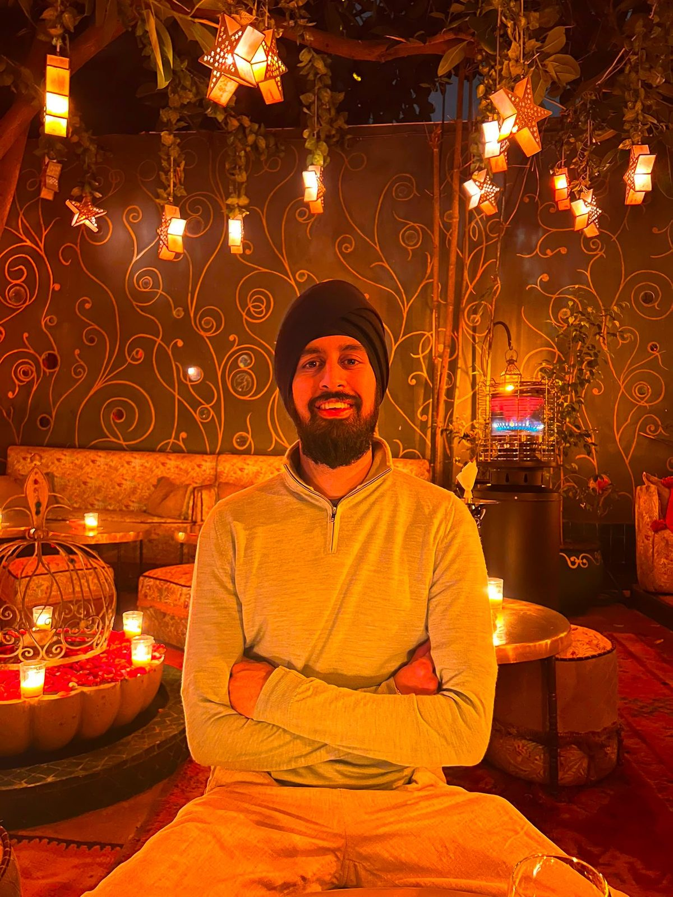

01

01
A life, intentionally built
Nirmit was twenty-four when he built this site. He called it Eudaimonia, after the Greek word for flourishing: a life well lived. Growth sat at the centre of how he lived. He believed progress comes in small steps, and that a good life is assembled slowly rather than arriving all at once. To the Greeks, eudaimonia was something reached through action rather than granted by chance, and Nirmit took the same view. He took active control of his life and made the choices that would let it flourish. This site is his demonstration of that approach — a working model of how he believed a life should be built.